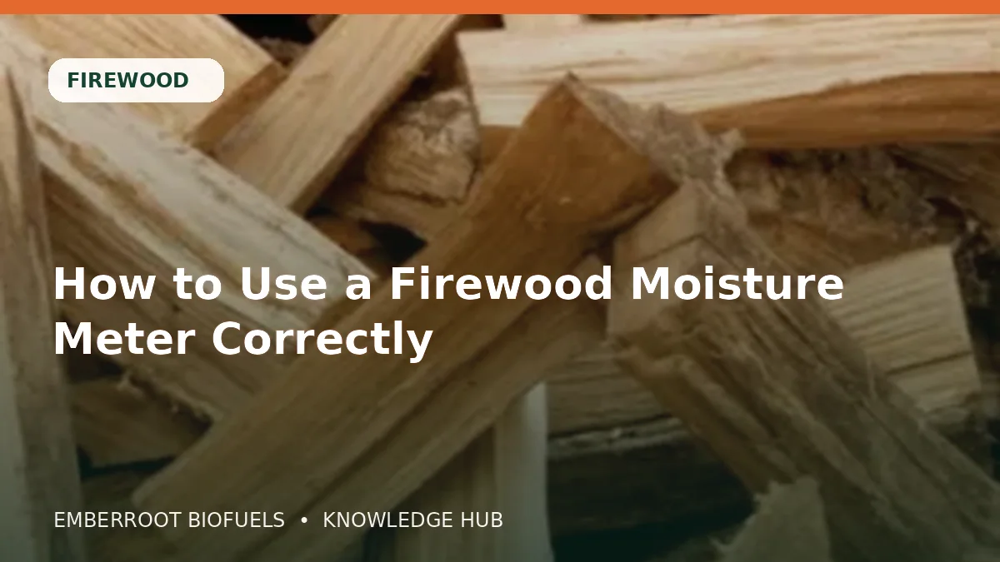
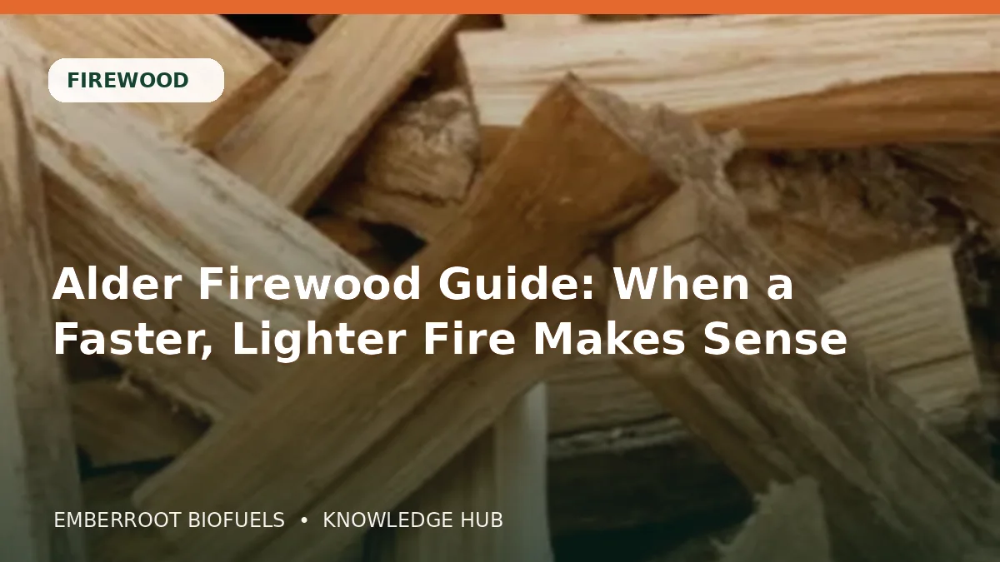
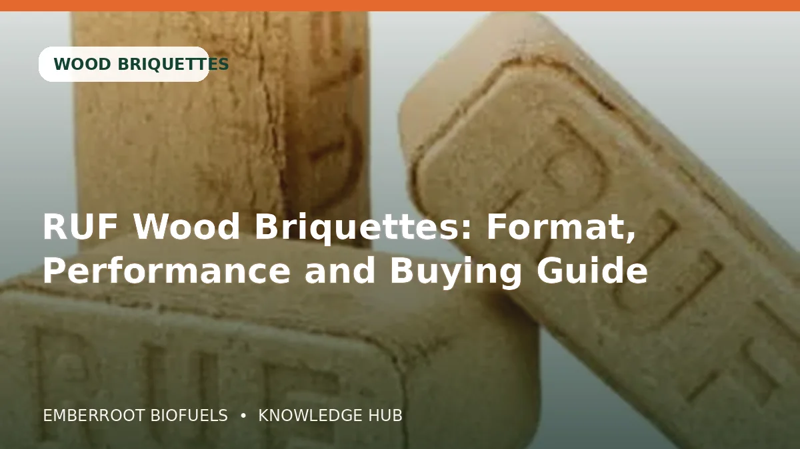
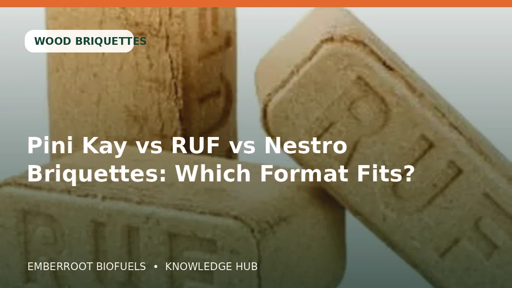
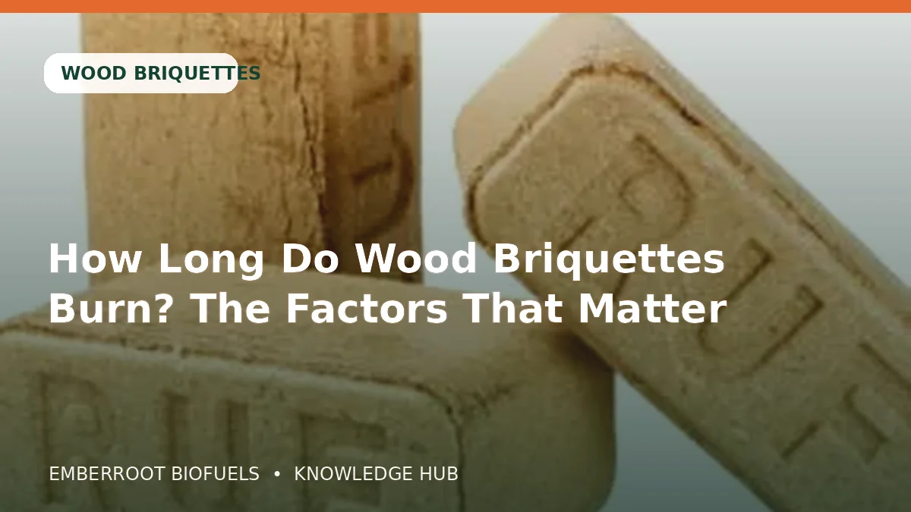

02JUNBrennholz
Feuchtemessgerät für Brennholz richtig verwenden
Praxisratgeber zu Brennholz: Spezifikation, Leistung, Lagerung und Einkaufsprüfung rund um „Feuchtemessgerät für Brennholz richtig verwenden“.
Artikel lesenPraxisnahe Informationen zu Holzpellets, Brennholz, Briketts, Holznebenprodukten, Lagerung, Zertifizierung und Großlieferungen.

02JUNPraxisratgeber zu Brennholz: Spezifikation, Leistung, Lagerung und Einkaufsprüfung rund um „Feuchtemessgerät für Brennholz richtig verwenden“.
Artikel lesen
29MAIPraxisratgeber zu Brennholz: Spezifikation, Leistung, Lagerung und Einkaufsprüfung rund um „Erlenholz als Brennholz: Wann ein schnelles Feuer sinnvoll ist“.
Artikel lesen
25MAIPraxisratgeber zu Holzbriketts: Spezifikation, Leistung, Lagerung und Einkaufsprüfung rund um „RUF-Holzbriketts: Form, Leistung und Einkaufsratgeber“.
Artikel lesen
21MAIPraxisratgeber zu Holzbriketts: Spezifikation, Leistung, Lagerung und Einkaufsprüfung rund um „Pini Kay, RUF oder Nestro: Welches Brikettformat passt?“.
Artikel lesen
17MAIPraxisratgeber zu Holzbriketts: Spezifikation, Leistung, Lagerung und Einkaufsprüfung rund um „Wie lange brennen Holzbriketts? Die entscheidenden Faktoren“.
Artikel lesen 13MAI
13MAI
Praxisratgeber zu Hackschnitzel, Sägemehl und Späne: Spezifikation, Leistung, Lagerung und Einkaufsprüfung rund um „Hackschnitzel oder Mulch: Das richtige Gartenmaterial“.
Artikel lesen 09MAI
09MAI
Praxisratgeber zu Hackschnitzel, Sägemehl und Späne: Spezifikation, Leistung, Lagerung und Einkaufsprüfung rund um „Beste Holzhackschnitzel für Garten, Wege und Feuchteschutz“.
Artikel lesen 05MAI
05MAI
Praxisratgeber zu Hackschnitzel, Sägemehl und Späne: Spezifikation, Leistung, Lagerung und Einkaufsprüfung rund um „Sägemehl verwenden und sicher handhaben“.
Artikel lesenKeine passenden Artikel gefunden.